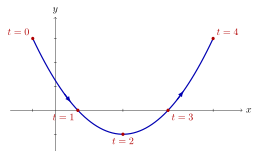
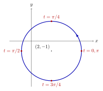
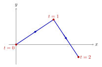
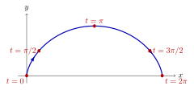
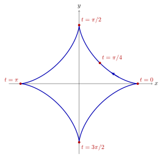
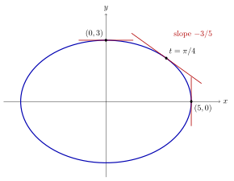
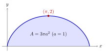
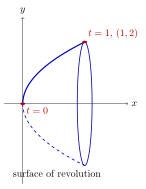
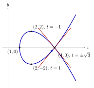

12.1 Parametric Equations¶
Guiding question
Until now a curve in the plane has been the graph of a function \(y=F(x)\), or the set of points that satisfy an equation in \(x\) and \(y\). Many curves cannot be written that way: a circle fails the vertical line test, the path of a point on a rolling wheel has sharp points, and a curve that describes motion should record not only where an object goes but when. A parametric description gives \(x\) and \(y\) separately, as functions of a third variable \(t\), the parameter. This section shows how to read, build and change such descriptions, and then proves the formulas of calculus for them: the slope of a tangent line, the second derivative, arc length, area and surface area. Each is a consequence of the single-variable calculus you know, and each is proved here in full.
By the end of this section you should be able to:
-
sketch a parametric curve from a table, show its orientation and the parameter values at marked points, and eliminate the parameter, keeping track of the part of the curve that is actually traced;
-
write parametric equations for lines, segments, circles, ellipses, graphs \(y=F(x)\) and \(x=G(y)\), and polygonal paths, with a stated parameter interval and orientation;
-
find \(\dfrac{dy}{dx}\) and \(\dfrac{d^2y}{dx^2}\) from the parametric equations, locate horizontal and vertical tangent lines, write the tangent line, and decide concavity;
-
compute the arc length of a parametric curve, the area under it, and the area of the surface it generates when revolved about a coordinate axis, and say when each formula applies;
-
prove each of these formulas.
Basic ideas¶
A point moves around a circle of radius \(4\), once every \(2\pi\) hours, counterclockwise from \((4,0)\). At time \(t\) it has turned through the angle \(\theta=t\), so its position is \((4\cos t,4\sin t)\). The two formulas for \(x\) and \(y\) are parametric equations, and \(t\) is the parameter.
Definition 12.1.1: Parametric curve and orientation
Let \(f\) and \(g\) be continuous on an interval \(a\le t\le b\) (or on an infinite interval). The parametric equations
describe the parametric curve \(C\) that consists of all points \((f(t),g(t))\) with \(t\) in the interval; \(t\) is the parameter. The direction in which \(C\) is traced as \(t\) increases is its positive orientation; it is shown by arrows. The points \((f(a),g(a))\) and \((f(b),g(b))\) are the initial point and the terminal point.
Two things are described at once: a set of points (the curve) and a way of travelling over it (the orientation, the speed, and the number of times each point is visited). The value of \(t\) does not appear in the picture, so when it matters we label points of the curve with their parameter values. Different parametric equations can describe the same set of points while travelling over it differently; the next sections give many instances.
Procedure 12.1.2: Eliminating the parameter
-
Solve one equation for \(t\) and substitute into the other, or combine the equations with an identity such as \(\cos^2t+\sin^2t=1\).
-
Find the range of \(x\) and of \(y\) over the parameter interval. The Cartesian equation may describe more than the parametric curve; the range tells which part is traced.
-
Find the orientation: make a short table of \((x,y)\) for increasing \(t\), or see in which direction \(x\) and \(y\) change.
-
Check one or two points of the table against the equation you found.
Example 12.1.3: A parametric parabola
Graph \(x=2t-1\), \(y=t^2-4t+3\) for \(0\le t\le4\): make a table, eliminate the parameter, and give the orientation.
Solution. Table. Substitute \(t=0,1,2,3,4\) into both equations:
Eliminate \(t\). From \(x=2t-1\) we get \(t=\frac{x+1}2\). Substituting into the \(y\)-equation and expanding,
Range and orientation. As \(t\) runs from \(0\) to \(4\), \(x=2t-1\) increases from \(-1\) to \(7\) and takes each value once, so the curve is the part of the parabola \(y=\frac{(x-1)(x-5)}4\) with \(-1\le x\le7\). It opens upward, crosses the \(x\)-axis at \(x=1\) and \(x=5\) and has its vertex at \(x=3\) (the midpoint of the zeros), where \(y=\frac{2\cdot(-2)}4=-1\). Because \(x\) increases with \(t\), the orientation is from left to right. Check. \(t=3\) gives \(x=5\) and \(\frac{(5-1)(5-5)}4=0=y\), as in the table.
Answer. The arc of \(y=\frac{(x-1)(x-5)}4\) from \((-1,3)\) to \((7,3)\), with vertex \((3,-1)\), traced from left to right (Figure below).

Circles and ellipses¶
Theorem 12.1.4: Circles and ellipses
Let \(a>0\), \(b>0\), \(\omega\ne0\) and let \((x_0,y_0)\) be a point. The parametric equations
describe the ellipse \(\left(\dfrac{x-x_0}{a}\right)^2+\left(\dfrac{y-y_0}{b}\right)^2=1\), with center \((x_0,y_0)\) and semi-axes \(a\) (horizontal) and \(b\) (vertical). Over any interval of length \(\frac{2\pi}{\abs\omega}\) the ellipse is traced exactly once. The orientation is counterclockwise if \(\omega>0\) and clockwise if \(\omega<0\). For \(a=b=r\) this is the circle of radius \(r\) about \((x_0,y_0)\).
Proof. Every point is on the ellipse. Put \(u=\frac{x-x_0}a=\cos\omega t\) and \(v=\frac{y-y_0}b=\sin\omega t\). Then \(u^2+v^2=\cos^2\omega t+\sin^2\omega t=1\). Every point is reached, once per period. Let \((x,y)\) be on the ellipse, so that \((u,v)\) is on the unit circle. Then \((u,v)=(\cos\theta,\sin\theta)\) for exactly one angle \(\theta\) in any half-open interval of length \(2\pi\). As \(t\) runs over an interval of length \(\frac{2\pi}{\abs\omega}\), the angle \(\omega t\) runs over an interval of length \(2\pi\) (backwards if \(\omega<0\)), so it takes the value \(\theta\) (modulo \(2\pi\)) once, and \((x,y)\) is reached once. Orientation. The curve is closed, simple and traced once, so its orientation is decided by the direction of motion at any one point. At \(t=0\) the point is \((x_0+a,y_0)\), the rightmost point of the ellipse, and the velocity \(\left(\frac{dx}{dt},\frac{dy}{dt}\right)=(-a\omega\sin0,\ b\omega\cos0)=(0,b\omega)\) points up if \(\omega>0\) and down if \(\omega<0\). Moving up at the rightmost point is counterclockwise motion, and moving down is clockwise. ◻ ∎
The number \(\abs\omega\) is the angular frequency: the circle \(x=r\cos\omega t\), \(y=r\sin\omega t\) is traced once in time \(\frac{2\pi}{\abs\omega}\), so a larger \(\abs\omega\) means faster travel over the same curve. Replacing \((\cos,\sin)\) by \((\sin,\cos)\), with signs, gives the other starting points and directions; the safe method is the one in the next example: choose the form, then test it at \(t=0\) and at one more point.
Knowledge Check 12.1.1: Eliminate the parameter
Eliminate \(t\) from \(x=t^2+1\), \(y=2t\) for \(-3\le t\le3\). Which part of the Cartesian curve do you obtain?
Example 12.1.5: Two circles
(a) Show that \(x=2+3\cos2t\), \(y=-1+3\sin2t\), \(0\le t\le\pi\), describes a circle once around, and mark the points for \(t=0,\frac\pi4,\frac\pi2,\frac{3\pi}4\). (b) A runner starts at \((0,50)\) and runs clockwise around a circular track of radius \(50\) m centered at the origin, one lap every \(4\) minutes. Find parametric equations for \(t\) in minutes.
Solution. (a) The curve. Subtract the centers and square:
So the points lie on the circle with center \((2,-1)\) and radius \(3\). Here \(a=b=3\) and \(\omega=2\) in Theorem 12.1.4: the period is \(\frac{2\pi}2=\pi\), which is the length of the interval, so the circle is traced exactly once, and \(\omega>0\) gives the counterclockwise direction. Marked points. With \(x=2+3\cos2t\), \(y=-1+3\sin2t\): \(t=0\) gives \((2+3,\,-1+0)=(5,-1)\); \(t=\frac\pi4\) gives \(\cos\frac\pi2=0\), \(\sin\frac\pi2=1\) and the point \((2,2)\); \(t=\frac\pi2\) gives \(\cos\pi=-1\), \(\sin\pi=0\) and \((-1,-1)\); \(t=\frac{3\pi}4\) gives \(\cos\frac{3\pi}2=0\), \(\sin\frac{3\pi}2=-1\) and \((2,-4)\); \(t=\pi\) returns to \((5,-1)\). (b) Clockwise from the top: try \(x=50\sin\omega t\), \(y=50\cos\omega t\). At \(t=0\) this is \((0,50)\). The velocity at \(t=0\) is \((50\omega\cos0,\,-50\omega\sin0)=(50\omega,0)\), which points to the right when \(\omega>0\); moving right at the top of a circle is clockwise motion. One lap takes \(4\) minutes, so \(4\omega=2\pi\) and \(\omega=\frac\pi2\). The equations are
Check. \(t=1,2,3,4\) give \((50,0)\), \((0,-50)\), \((-50,0)\), \((0,50)\): right, bottom, left, top, a clockwise lap, and \(x^2+y^2=2500\left(\sin^2+\cos^2\right)=2500\).

Example 12.1.6: An ellipse that is not centered at the origin
Find parametric equations for the ellipse with center \((-2,3)\), horizontal semi-axis \(4\) and vertical semi-axis \(2\), traced clockwise from its rightmost point, once in \(2\pi\) time units. Then eliminate \(t\), and change the equations so that the lap takes \(5\) time units.
Solution. Theorem 12.1.4 with \(x_0=-2\), \(y_0=3\), \(a=4\), \(b=2\) needs \(\omega<0\) for clockwise motion, and \(\abs\omega=\frac{2\pi}{2\pi}=1\), so \(\omega=-1\). Since \(\sin(-t)=-\sin t\),
Check the start and the direction. \(t=0\) gives \((2,3)\), the rightmost point. Then \(t=\frac\pi2\): \((-2,1)\); \(t=\pi\): \((-6,3)\); \(t=\frac{3\pi}2\): \((-2,5)\); \(t=2\pi\): back to \((2,3)\). The order right, bottom, left, top is clockwise. Eliminate \(t\). \(\cos t=\frac{x+2}4\) and \(\sin t=-\frac{y-3}2\). Square both and add; since \(\cos^2t+\sin^2t=1\),
Lap in \(5\) time units. We need \(\abs\omega\cdot5=2\pi\) with \(\omega<0\), so \(\omega=-\frac{2\pi}5\): \(x=-2+4\cos\frac{2\pi t}5\), \(y=3-2\sin\frac{2\pi t}5\), \(0\le t\le5\). It is the same ellipse, in the same direction, traced faster.
Pause and think 12.1.1: Same circle, different journey
The equations \(x=\cos t\), \(y=\sin t\) for \(0\le t\le2\pi\) and \(x=\cos t^2\), \(y=\sin t^2\) for \(0\le t\le\sqrt{2\pi}\) both describe the unit circle. In what ways are the two descriptions the same, and in what ways do they differ?
Answer and discussion
They are the same set of points: the unit circle, traced once counterclockwise from \((1,0)\) back to \((1,0)\) (the angle \(t^2\) also runs over \([0,2\pi]\)). They differ as journeys: in the first the speed is constant, \(1\); in the second the speed is \(2t\), so the point starts almost at rest and speeds up. A parametrization is a curve together with a way of moving along it. Note that both journeys have the same length: \(\int_0^{\sqrt{2\pi}}2t\,dt=2\pi=\int_0^{2\pi}1\,dt\), which is the invariance of arc length proved in Appendix I.
Lines and segments¶
Theorem 12.1.7: Lines and segments
-
Let \((p,q)\ne(0,0)\). The equations \(x=x_0+pt\), \(y=y_0+qt\), \(-\infty<t<\infty\), describe the line through \((x_0,y_0)\) with slope \(\frac qp\) if \(p\ne0\), and the vertical line \(x=x_0\) if \(p=0\).
-
The segment from \(P(x_P,y_P)\) to \(Q(x_Q,y_Q)\) is traced once, from \(P\) to \(Q\), by \(x=x_P+(x_Q-x_P)s\), \(y=y_P+(y_Q-y_P)s\), \(0\le s\le1\). For \(t_0\le t\le t_1\) put \(s=\frac{t-t_0}{t_1-t_0}\).
Proof. (1) If \(p\ne0\), solve \(x=x_0+pt\) for \(t=\frac{x-x_0}p\) and substitute: \(y=y_0+q\,\frac{x-x_0}p\), that is \(y-y_0=\frac qp(x-x_0)\), a line of slope \(\frac qp\) through \((x_0,y_0)\). Conversely every point \((x,y)\) of that line comes from \(t=\frac{x-x_0}p\). If \(p=0\), then \(x=x_0\) for all \(t\) and \(y=y_0+qt\) takes every real value because \(q\ne0\). (2) Apply (1) with \((x_0,y_0)=P\) and \((p,q)=(x_Q-x_P,\,y_Q-y_P)\): the point is on the line \(PQ\); \(s=0\) gives \(P\) and \(s=1\) gives \(Q\). Each coordinate is a linear function of \(s\), so it moves steadily, and a point of the line between \(P\) and \(Q\) is exactly one whose parameter lies between \(0\) and \(1\) (its distance from \(P\) is \(s\) times the distance \(PQ\)). Substituting \(s=\frac{t-t_0}{t_1-t_0}\) moves the parameter interval to \([t_0,t_1]\) without changing the set of points or the direction. ◻ ∎
A line has many descriptions: replacing \((p,q)\) by \((kp,kq)\) with \(k\ne0\) describes the same line, faster, slower or in the opposite direction.
Example 12.1.8: Lines, a segment and a polygonal path
(a) Eliminate the parameter in \(x=5-2t\), \(y=1+6t\). (b) Parametrize the segment from \(P(1,-2)\) to \(Q(5,4)\) for \(2\le t\le5\). (c) Parametrize the path \(O(0,0)\to A(3,2)\to B(5,-1)\) for \(0\le t\le2\), with \(A\) reached at \(t=1\).
Solution. (a) From \(x=5-2t\), \(t=\frac{5-x}2\). Then \(y=1+6\cdot\frac{5-x}2=1+3(5-x)=16-3x\). This agrees with Theorem 12.1.7(1): \(p=-2\), \(q=6\), slope \(\frac qp=-3\), through \((5,1)\) at \(t=0\). As \(t\) increases, \(x\) decreases: the line is traced from right to left (and upward). (b) Here \(t_0=2\), \(t_1=5\), so \(s=\frac{t-2}3\). The differences are \(x_Q-x_P=4\) and \(y_Q-y_P=6\):
Check. \(t=2\): \(x=1\), \(y=-2\), the point \(P\). \(t=5\): \(x=1+4=5\), \(y=4\), the point \(Q\). The slope is \(\frac{6/3}{4/3}=\frac32=\frac{4-(-2)}{5-1}\). (c) Parametrize each segment separately, with the parameter intervals \([0,1]\) and \([1,2]\). On \(OA\) use \(s=t\): \(x=3t\), \(y=2t\). On \(AB\) use \(s=t-1\), with \(x_B-x_A=2\) and \(y_B-y_A=-3\): \(x=3+2(t-1)=1+2t\), \(y=2-3(t-1)=5-3t\). So
Check. At \(t=1\) both formulas give \((3,2)\) (the pieces join); at \(t=2\) the second gives \((5,-1)=B\); at \(t=0\) the first gives \(O\).

Curves given by equations in \(x\) and \(y\)¶
Parametrizing a given curve is the reverse of eliminating the parameter, and the answer is never unique.
-
A graph \(y=F(x)\), \(a\le x\le b\): \(x=t\), \(y=F(t)\), \(a\le t\le b\) (left to right). To go from right to left use \(x=a+b-t\), \(y=F(a+b-t)\).
-
A graph \(x=G(y)\): \(y=t\), \(x=G(t)\) on the interval of \(y\)-values.
-
A circle or an ellipse, or an arc of one: Theorem 12.1.4, with the interval of the angle that gives the arc.
-
A path made of pieces: parametrize each piece on consecutive intervals, as in Example 12.1.8(c).
In each case state the interval of the parameter, and check the endpoints and the direction.
Example 12.1.9: Parametrizing curves
Find parametric equations for (a) the part of \(y=x^2-2x\) with \(-1\le x\le3\), from left to right and then from right to left; (b) the complete curve \(x=y^3-3y\); (c) the lower half of the circle \((x-1)^2+(y+2)^2=9\), traced clockwise.
Solution. (a) Take \(x=t\) and \(y=t^2-2t\) for \(-1\le t\le3\); the curve goes from \((-1,3)\) to \((3,3)\) because \(y(-1)=1+2=3\) and \(y(3)=9-6=3\). For the reverse direction use \(x=3-t\) and \(y=(3-t)^2-2(3-t)\) with \(0\le t\le4\) (\(x=3-t\) runs from \(3\) down to \(-1\)). Expanding, \((3-t)^2-2(3-t)=9-6t+t^2-6+2t=t^2-4t+3\). So \(x=3-t\), \(y=t^2-4t+3\), \(0\le t\le4\). (b) The curve is given as \(x\) in terms of \(y\), so let \(y=t\): \(x=t^3-3t\), \(y=t\). Every real \(y\) occurs, so the interval is \(-\infty<t<\infty\). (The curve is \(y\) against \(x\) sideways: for \(y=0,\pm\sqrt3\) it crosses the \(y\)-axis, where \(t^3-3t=t(t^2-3)=0\).) (c) Theorem 12.1.4 gives \(x=1+3\cos\theta\), \(y=-2+3\sin\theta\) for the whole circle (center \((1,-2)\), radius \(3\)). Clockwise needs \(\omega<0\); take \(\theta=-t\): \(x=1+3\cos t\), \(y=-2-3\sin t\). For \(0\le t\le\pi\), \(\sin t\ge0\), so \(y+2=-3\sin t\le0\): the lower half. Check. \(t=0\): \((4,-2)\); \(t=\frac\pi2\): \((1,-5)\); \(t=\pi\): \((-2,-2)\). Right, bottom, left: clockwise. The equation \((x-1)^2+(y+2)^2=9\cos^2t+9\sin^2t=9\) holds.
The cycloid and the astroid¶
Two classical curves cannot be written as \(y=F(x)\) in any useful way, but have simple parametric equations.
Example 12.1.10: The cycloid
A wheel of radius \(a>0\) rolls without slipping along the \(x\)-axis. Find the path of a point \(P\) on its rim, which starts at the origin, describe one arch, and examine the curve near \(t=0\).
Solution. The equations. Let \(t\) be the angle (in radians) through which the wheel has turned. Rolling without slipping means that the wheel has advanced the length of the arc that has touched the ground, \(at\), so the center is at \(C=(at,a)\). At the start \(P\) is directly below the center: the vector from \(C\) to \(P\) is \((0,-a)\), at the angle \(-\frac\pi2\). The wheel turns clockwise, so after turning through \(t\) that vector has the angle \(-\frac\pi2-t\): it is \(\left(a\cos(-\tfrac\pi2-t),\,a\sin(-\tfrac\pi2-t)\right)=(-a\sin t,\,-a\cos t)\). Therefore \(P=C+(-a\sin t,-a\cos t)\):
One arch. The wheel completes one revolution for \(0\le t\le2\pi\), and \(y=a(1-\cos t)\) is \(0\) only when \(\cos t=1\), that is at \(t=0\) and \(t=2\pi\). So \(P\) touches the ground at \((0,0)\) and at \((2\pi a,0)\) (when \(t=2\pi\): \(x=a(2\pi-0)\)) and \(y>0\) in between. At \(t=\pi\) it is at the top, \((\pi a,2a)\), since \(\cos\pi=-1\). For \(t=\frac\pi2\) and \(t=\frac{3\pi}2\): \((a(\frac\pi2-1),a)\) and \((a(\frac{3\pi}2+1),a)\). The picture for \(a=1\) is below; the curve then repeats every \(2\pi a\) to the right. Near \(t=0\) (Chapter 11). By the series of \(\sin t\) and \(\cos t\) (Theorem 11.3.6), \(x=a\left(\frac{t^3}6-\frac{t^5}{120}+\cdots\right)\) and \(y=a\left(\frac{t^2}2-\frac{t^4}{24}+\cdots\right)\). For small \(t>0\) the leading terms dominate: \(x\approx\frac{at^3}6\) and \(y\approx\frac{at^2}2\). Eliminating \(t=\left(\frac{6x}a\right)^{1/3}\) gives \(y\approx\frac a2\left(\frac{6x}a\right)^{2/3}\). A power \(x^{2/3}\) has a sharp point at \(x=0\) (its slope is infinite there): the cycloid has a cusp at each point where it meets the ground, and the tangent line there is vertical.

Example 12.1.11: The astroid
Eliminate the parameter from \(x=2\cos^3t\), \(y=2\sin^3t\), \(0\le t\le2\pi\), find the points for \(t=0,\frac\pi4,\frac\pi2,\pi,\frac{3\pi}2\), and describe the curve.
Solution. Eliminate \(t\). Divide by \(2\) and raise to the power \(\frac23\). For every real \(u\), \((u^3)^{2/3}=u^2\) (the cube root keeps the sign, and the square removes it). So \(\left(\frac x2\right)^{2/3}=\cos^2t\) and \(\left(\frac y2\right)^{2/3}=\sin^2t\). Adding, and using \(\cos^2t+\sin^2t=1\),
Points. \(t=0\): \((2,0)\). \(t=\frac\pi4\): \(\cos\frac\pi4=\sin\frac\pi4=\frac{\sqrt2}2\) and \(\left(\frac{\sqrt2}2\right)^3=\frac{2\sqrt2}8=\frac{\sqrt2}4\), so \((\frac{\sqrt2}2,\frac{\sqrt2}2)\). \(t=\frac\pi2\): \((0,2)\). \(t=\pi\): \((-2,0)\). \(t=\frac{3\pi}2\): \((0,-2)\). Check the middle one in the Cartesian equation: \(2\left(\frac{\sqrt2}2\right)^{2/3}=2\cdot2^{-1/3}=2^{2/3}\). The curve. The curve is traced counterclockwise (from \((2,0)\) through \((0,2)\)), once on \([0,2\pi]\). It is the astroid, a star with four cusps at \((\pm2,0)\) and \((0,\pm2)\) and four arcs that bend in toward the origin; it is the path of a point of a circle of radius \(\frac a4\) rolling inside a circle of radius \(a\) (here \(a=2\)). The cusps occur where both \(\frac{dx}{dt}=-6\cos^2t\sin t\) and \(\frac{dy}{dt}=6\sin^2t\cos t\) vanish, at \(t=0,\frac\pi2,\pi,\frac{3\pi}2\).

The slope of the tangent line¶
Parametric equations relate \(y\) to \(x\) through \(t\), so it makes sense to ask for \(\frac{dy}{dx}\). The Chain Rule suggests \(\frac{dy}{dt}=\frac{dy}{dx}\cdot\frac{dx}{dt}\), hence \(\frac{dy}{dx}=\frac{dy/dt}{dx/dt}\), but that argument assumes that \(y\) is a differentiable function of \(x\). The theorem below makes that precise, and this is the step that needs \(f'(t_0)\ne0\).
Theorem 12.1.12: The slope of a parametric curve
Let \(x=f(t)\), \(y=g(t)\) where \(f'\) and \(g'\) are continuous on an interval \(I\), and let \(t_0\) be in \(I\).
-
If \(f'(t_0)\ne0\), then near \(t_0\) the curve is the graph of a differentiable function \(y=F(x)\), and at the point \((f(t_0),g(t_0))\)
\[\frac{dy}{dx}=\frac{g'(t_0)}{f'(t_0)}.\]The tangent line there is \(y-g(t_0)=\dfrac{g'(t_0)}{f'(t_0)}\bigl(x-f(t_0)\bigr)\). It is horizontal if \(g'(t_0)=0\).
-
If \(f'(t_0)=0\) and \(g'(t_0)\ne0\), the curve is near \(t_0\) the graph of a differentiable function \(x=G(y)\) with \(\frac{dx}{dy}=0\) there: the tangent line is the vertical line \(x=f(t_0)\).
-
If \(f'(t_0)=g'(t_0)=0\), the theorem says nothing. (The curve may have a cusp, as the cycloid does at \(t=0\); compute \(\lim\frac{g'(t)}{f'(t)}\) as \(t\to t_0\).)
Proof. (1) Because \(f'\) is continuous and \(f'(t_0)\ne0\), \(f'\) has the sign of \(f'(t_0)\) on an interval \(J\) around \(t_0\). So \(f\) is strictly monotonic and continuous on \(J\) and has an inverse function \(\varphi\) defined on the interval \(f(J)\). By the theorem on the derivative of an inverse function (Calculus I), \(\varphi\) is differentiable and \(\varphi'(x)=\frac1{f'(\varphi(x))}\). For \(t\) in \(J\) we have \(t=\varphi(f(t))\), so the point \((f(t),g(t))\) equals \((x,F(x))\) with \(x=f(t)\) and \(F=g\circ\varphi\). By the Chain Rule,
At \(t=t_0\) this is \(\frac{g'(t_0)}{f'(t_0)}\), the slope of the tangent line to the graph of \(F\) at \((f(t_0),g(t_0))\). (2) Interchange the roles of \(x\) and \(y\) in (1): \(g'(t_0)\ne0\) makes \(g\) invertible near \(t_0\), the curve is the graph of \(x=G(y)\) with \(G=f\circ g^{-1}\), and \(\frac{dx}{dy}=\frac{f'(t_0)}{g'(t_0)}=0\). A graph with \(\frac{dx}{dy}=0\) has the vertical tangent line \(x=f(t_0)\). (3) is a warning, not a claim; the cycloid at \(t=0\) is Example 12.1.10. ◻ ∎
Procedure 12.1.13: Tangent lines of a parametric curve
-
Compute \(f'(t)\) and \(g'(t)\).
-
Horizontal tangents: \(g'(t)=0\) and \(f'(t)\ne0\). Vertical tangents: \(f'(t)=0\) and \(g'(t)\ne0\). If both vanish, examine \(\lim\frac{g'}{f'}\).
-
The slope at \(t_0\) is \(\frac{g'(t_0)}{f'(t_0)}\); the tangent line is \(y-g(t_0)=\frac{g'(t_0)}{f'(t_0)}(x-f(t_0))\).
-
To find the points where the slope has a given value \(m\), solve \(g'(t)=m\,f'(t)\) and compute the points.
Knowledge Check 12.1.2: A slope
Find the slope of the curve \(x=t^2\), \(y=t^3\) at the point with \(t=2\).
Example 12.1.14: Tangent lines of an ellipse
For the ellipse \(x=5\cos t\), \(y=3\sin t\), \(0\le t\le2\pi\), find \(\frac{dy}{dx}\), the points with horizontal and with vertical tangent lines, the tangent line at \(t=\frac\pi4\), and the points where the slope is \(1\).
Solution. The slope. \(f'(t)=-5\sin t\) and \(g'(t)=3\cos t\), so for \(\sin t\ne0\)
Horizontal tangents. \(g'(t)=3\cos t=0\) at \(t=\frac\pi2,\frac{3\pi}2\), where \(f'(t)=-5\sin t=\mp5\ne0\). The points are \((0,3)\) and \((0,-3)\). Vertical tangents. \(f'(t)=-5\sin t=0\) at \(t=0,\pi\), where \(g'(t)=3\cos t=\pm3\ne0\): the points are \((5,0)\) and \((-5,0)\). Tangent line at \(t=\frac\pi4\). The point is \(\left(\frac{5\sqrt2}2,\frac{3\sqrt2}2\right)\approx(3.54,2.12)\). The slope is \(-\frac35\cot\frac\pi4=-\frac35\). The line is \(y-\frac{3\sqrt2}2=-\frac35\left(x-\frac{5\sqrt2}2\right)\); expanding, \(y=-\frac35x+\frac{3\sqrt2}2+\frac{3\sqrt2}2\), that is
Slope \(1\). Solve \(-\frac35\cot t=1\): \(\cot t=-\frac53\), so \(\tan t=-\frac35\) and \(t\) is in the second or fourth quadrant. In the second quadrant \(\sin t=\frac3{\sqrt{34}}\) and \(\cos t=-\frac5{\sqrt{34}}\) (because \(\cos^2t+\sin^2t=\frac{25+9}{34}=1\) and \(\frac{\sin t}{\cos t}=-\frac35\)). The point is \(\left(5\cos t,3\sin t\right)=\left(-\frac{25}{\sqrt{34}},\frac9{\sqrt{34}}\right)\); the fourth quadrant gives the opposite point \(\left(\frac{25}{\sqrt{34}},-\frac9{\sqrt{34}}\right)\). Check: at the first, \(-\frac35\cdot\frac{\cos t}{\sin t}=-\frac35\cdot\left(-\frac53\right)=1\).

The second derivative is not \(g''/f''\)
It is tempting to differentiate numerator and denominator again. That is wrong, as the next theorem shows. For \(x=t^2\), \(y=t^3\): \(\frac{g''}{f''}=\frac{6t}2=3t\), but \(\frac{d^2y}{dx^2}=\frac3{4t}\).
Theorem 12.1.15: The second derivative
Let \(x=f(t)\), \(y=g(t)\) where \(f\) and \(g\) are twice differentiable, \(f'\) and \(g'\) are continuous, and \(f'(t)\ne0\). Then
The curve is concave up where this is positive and concave down where it is negative.
Proof. By Theorem 12.1.12(1), near \(t_0\) the curve is the graph of \(F=g\circ\varphi\) with \(F'(x)=h(\varphi(x))\), where \(\varphi\) is the inverse of \(f\) and \(h(t)=\frac{g'(t)}{f'(t)}\). The function \(h\) is differentiable (a quotient of differentiable functions with \(f'\ne0\)), and \(\varphi'(x)=\frac1{f'(\varphi(x))}\). The Chain Rule applied to \(F'=h\circ\varphi\) gives
By the Quotient Rule \(h'=\frac{g''f'-g'f''}{(f')^2}\). Dividing by \(f'\) gives \(F''=\frac{f'g''-g'f''}{(f')^3}\). The statement about concavity is the second derivative test for \(F\). ◻ ∎
Example 12.1.16: Concavity and inflection points
(a) Find \(\frac{d^2y}{dx^2}\) for the cycloid \(x=a(t-\sin t)\), \(y=a(1-\cos t)\) on \(0<t<2\pi\) and describe the concavity. (b) For \(x=e^t\), \(y=t^3-3t\) find the intervals of concavity and the inflection points.
Solution. (a) \(f'=a(1-\cos t)\), \(g'=a\sin t\), and \(1-\cos t\ne0\) for \(0<t<2\pi\). So \(\frac{dy}{dx}=\frac{\sin t}{1-\cos t}\). Differentiate with the Quotient Rule: \(\frac{d}{dt}\frac{\sin t}{1-\cos t}=\frac{\cos t(1-\cos t)-\sin t\cdot\sin t}{(1-\cos t)^2}=\frac{\cos t-\cos^2t-\sin^2t}{(1-\cos t)^2}=\frac{\cos t-1}{(1-\cos t)^2}=-\frac1{1-\cos t}\). Divide by \(f'=a(1-\cos t)\):
It is negative for every \(t\) in \((0,2\pi)\) (a positive denominator), so each arch of the cycloid is concave down, which agrees with the picture. (b) \(f'=e^t\), \(g'=3t^2-3\), \(f''=e^t\), \(g''=6t\). Then \(\frac{dy}{dx}=\frac{3t^2-3}{e^t}\) and, by the theorem,
Because \(e^{-2t}>0\), the sign is that of \(-(t^2-2t-1)\). The zeros of \(t^2-2t-1\) are \(t=1\pm\sqrt2\) (quadratic formula: \(\frac{2\pm\sqrt{4+4}}2\)). The parabola \(t^2-2t-1\) is negative between them, so \(\frac{d^2y}{dx^2}>0\) for \(1-\sqrt2<t<1+\sqrt2\) (concave up) and \(<0\) outside (concave down). The concavity changes at \(t=1\pm\sqrt2\): the inflection points are \(\bigl(e^{1-\sqrt2},\,(1-\sqrt2)^3-3(1-\sqrt2)\bigr)\approx(0.66,\,1.17)\) and \(\bigl(e^{1+\sqrt2},\,(1+\sqrt2)^3-3(1+\sqrt2)\bigr)\approx(11.18,\,6.83)\).
Pause and think 12.1.2: When \(f'\) and \(g'\) both vanish
For the cycloid, \(f'(0)=g'(0)=0\), so Theorem 12.1.12 gives no slope at \(t=0\). What does the quotient \(\frac{dy}{dx}=\frac{\sin t}{1-\cos t}\) do as \(t\to0^+\), and what does that say about the curve at the origin?
Answer and discussion
\(\frac{\sin t}{1-\cos t}=\frac{2\sin\frac t2\cos\frac t2}{2\sin^2\frac t2}=\cot\frac t2\) (half-angle identities), which tends to \(+\infty\) as \(t\to0^+\). So the tangent lines to the curve become steeper and steeper as the curve approaches the origin along the right side: the limiting tangent direction is vertical, as the series in Example 12.1.10 showed. As \(t\to2\pi^-\) the quotient \(\cot\frac t2\to-\infty\), so at the next ground point the curve also arrives vertically. At each such point the curve arrives and leaves along the same vertical line, a cusp. The theorem cannot say this, because its hypothesis \(f'(t_0)\ne0\) fails; the limit of \(\frac{g'}{f'}\) does.
Arc length¶
How long is the curve \(x=f(t)\), \(y=g(t)\), \(a\le t\le b\)? We measure it as one measures a coastline: connect points of the curve by straight segments, add the lengths, and let the segments shrink. For a partition \(\Pi\) of \([a,b]\) into \(a=t_0<t_1<\cdots<t_n=b\) the inscribed polygon has the vertices \((f(t_k),g(t_k))\); its length is \(\ell(\Pi)=\sum_{k=1}^n\Delta_k\), where
is the length of the \(k\)th chord. The mesh of \(\Pi\) is the largest \(t_k-t_{k-1}\).
Definition 12.1.17: Arc length
The length of the curve \(C\) is the number \(L\) that \(\ell(\Pi)\) approaches as the mesh of \(\Pi\) tends to \(0\), if there is such a number.
The proof that the limit exists has a part that is also needed for surface area, so we prove it first, for sums with weights. Write \(v(t)=\bigl(f'(t),g'(t)\bigr)\) and \(\abs{v(t)}=\sqrt{f'(t)^2+g'(t)^2}\) (the speed).
Theorem 12.1.18: Polygon sums (a lemma)
Let \(f'\) and \(g'\) be continuous on \([a,b]\) and let \(h\) be continuous on \([a,b]\). For a partition \(\Pi\) and any numbers \(\tau_k\) with \(t_{k-1}\le\tau_k\le t_k\),
Proof. Let \(\varepsilon>0\), \(H=\max\abs h\), \(V=\max\abs v\) (continuous functions on a closed interval are bounded). The functions \(f'\), \(g'\) and \(h\) are uniformly continuous on \([a,b]\), so there is \(\delta>0\) such that \(\abs{s-s'}<\delta\) implies \(\abs{f'(s)-f'(s')}<\varepsilon\), \(\abs{g'(s)-g'(s')}<\varepsilon\) and \(\abs{h(s)-h(s')}<\varepsilon\). Take a partition of mesh \(<\delta\) and write \(\Delta t_k=t_k-t_{k-1}\).
Step 1: each chord is close to speed times \(\Delta t_k\). By the Mean Value Theorem there are \(\xi_k\) and \(\eta_k\) in \((t_{k-1},t_k)\) with \(f(t_k)-f(t_{k-1})=f'(\xi_k)\Delta t_k\) and \(g(t_k)-g(t_{k-1})=g'(\eta_k)\Delta t_k\). Hence \(\Delta_k=\Delta t_k\,\bigl|\bigl(f'(\xi_k),g'(\eta_k)\bigr)\bigr|\). The vectors \(\bigl(f'(\xi_k),g'(\eta_k)\bigr)\) and \(v(t_k)\) differ by a vector whose coordinates are less than \(\varepsilon\) in size, so its length is less than \(\sqrt2\,\varepsilon\). The triangle inequality \(\bigl|\abs{u}-\abs{w}\bigr|\le\abs{u-w}\) for vectors in the plane gives
Step 2: the weighted sum is close to a Riemann sum. Multiply by \(\abs{h(\tau_k)}\le H\) and add: \(\Bigl|\sum h(\tau_k)\Delta_k-\sum h(\tau_k)\abs{v(t_k)}\Delta t_k\Bigr|\le\sqrt2\,H\varepsilon(b-a)\).
Step 3: the Riemann sum is close to the integral. For \(t\) in \([t_{k-1},t_k]\) we have \(\abs{h(\tau_k)-h(t)}<\varepsilon\) and \(\bigl|\abs{v(t_k)}-\abs{v(t)}\bigr|\le\abs{v(t_k)-v(t)}<\sqrt2\,\varepsilon\), so
Integrating over \([t_{k-1},t_k]\) and adding, \(\Bigl|\sum h(\tau_k)\abs{v(t_k)}\Delta t_k-\int_a^bh\abs v\,dt\Bigr|\le(V+\sqrt2H)\,\varepsilon\,(b-a)\).
Combining Steps 2 and 3, the distance from \(\sum h(\tau_k)\Delta_k\) to \(\int_a^bh\abs v\,dt\) is at most \(\varepsilon(b-a)\bigl(2\sqrt2\,H+V\bigr)\), which is as small as we wish when \(\varepsilon\) is. ◻ ∎
Theorem 12.1.19: Arc length of a parametric curve
Let \(f'\) and \(g'\) be continuous on \([a,b]\). Then the length of \(C\) exists and
Moreover every inscribed polygon is no longer than \(L\): \(\ell(\Pi)\le L\) for every partition \(\Pi\).
Proof. Take \(h=1\) in Theorem 12.1.18: \(\ell(\Pi)=\sum\Delta_k\to\int_a^b\abs v\,dt\) as the mesh tends to \(0\), so \(L\) exists and has the stated value. For the last statement fix a partition and a chord. Its vector is \(D=\bigl(f(t_k)-f(t_{k-1}),\,g(t_k)-g(t_{k-1})\bigr)=\int_{t_{k-1}}^{t_k}v(t)\,dt\) (Fundamental Theorem of Calculus in each coordinate), and \(\Delta_k=\abs D\). If \(D\ne0\) let \(e=\frac D{\abs D}\), a unit vector. Then \(\abs D=e\cdot D=\int_{t_{k-1}}^{t_k}e\cdot v(t)\,dt\le\int_{t_{k-1}}^{t_k}\abs{v(t)}\,dt\), because \(e\cdot v\le\abs e\,\abs v=\abs v\) (the Cauchy–Schwarz inequality in the plane). Adding over \(k\) gives \(\ell(\Pi)\le\int_a^b\abs v\,dt=L\). ◻ ∎
Remarks. (1) For \(x=t\), \(y=F(t)\) the formula is \(L=\int_a^b\sqrt{1+F'(x)^2}\,dx\), the arc length formula for a graph. (2) The integrand \(\abs{v(t)}=\sqrt{f'^2+g'^2}\) is the speed. The formula adds up speed times time, so it counts a piece of the curve once for every time it is traced; it equals the length of the curve as a set of points only if the curve is traced once. That the length of a curve traced once does not depend on which parametrization is used is proved in Appendix I (Theorem I.4). (3) The proof used continuity of \(f'\) and \(g'\). If \(f'\) or \(g'\) has a jump (a corner of the curve), split the interval at the corner and add the lengths.
Knowledge Check 12.1.3: An arc length
Use the formula to find the length of \(x=3t\), \(y=4t\) for \(0\le t\le2\) and check it with the distance formula.
Pause and think 12.1.3: A circle traced twice
The curve \(x=\cos t\), \(y=\sin t\), \(0\le t\le4\pi\), is the unit circle, but the arc length formula gives \(4\pi\), not \(2\pi\). Is the formula wrong? What does it measure, and when does it measure the length of the curve?
Answer and discussion
The formula is not wrong: it adds speed times time, so it measures the distance travelled, which is \(4\pi\) for two laps. It equals the length of the curve as a set of points when the curve is traced exactly once (injective except possibly that the end may meet the start). For the circle with \(0\le t\le2\pi\) the formula gives the correct circumference \(2\pi\). This is why statements about arc length, area and surface area carry the condition that the curve is traced once.
Example 12.1.20: Three arc lengths
Find the length of (a) \(x=3t^2\), \(y=2t^3\), \(0\le t\le1\); (b) one arch of the cycloid \(x=a(t-\sin t)\), \(y=a(1-\cos t)\); (c) the ellipse \(x=5\cos t\), \(y=3\sin t\), to three decimals.
Solution. (a) \(f'=6t\) and \(g'=6t^2\), so \(f'^2+g'^2=36t^2+36t^4=36t^2(1+t^2)\) and, since \(t\ge0\), \(\sqrt{f'^2+g'^2}=6t\sqrt{1+t^2}\). By Theorem 12.1.19, \(L=\int_0^16t\sqrt{1+t^2}\,dt\). Substitute \(u=1+t^2\), \(du=2t\,dt\); the limits \(t=0,1\) become \(u=1,2\):
Check. The chord from \((0,0)\) to \((3,2)\) has length \(\sqrt{13}\approx3.606<3.657\), as it must (Theorem 12.1.19). (b) \(f'=a(1-\cos t)\), \(g'=a\sin t\). Then \(f'^2+g'^2=a^2\left(1-2\cos t+\cos^2t+\sin^2t\right)=a^2(2-2\cos t)\). By the half-angle identity \(1-\cos t=2\sin^2\frac t2\), so \(f'^2+g'^2=4a^2\sin^2\frac t2\) and \(\sqrt{f'^2+g'^2}=2a\sin\frac t2\) (since \(\sin\frac t2\ge0\) on \([0,2\pi]\)). Then
One arch is four times as long as the diameter \(2a\) of the wheel. (c) \(f'=-5\sin t\) and \(g'=3\cos t\), so \(f'^2+g'^2=25\sin^2t+9\cos^2t=9+16\sin^2t\) (using \(\cos^2t=1-\sin^2t\)). By symmetry of the ellipse the four quarters have equal length, so \(L=4\int_0^{\pi/2}\sqrt{9+16\sin^2t}\,dt\). This integral has no elementary antiderivative (it is an elliptic integral), so use Simpson’s rule with \(n=4\), \(h=\frac\pi8\). The values of \(\phi(t)=\sqrt{9+16\sin^2t}\) at \(t=0,\frac\pi8,\frac\pi4,\frac{3\pi}8,\frac\pi2\) are \(3\), \(3.368\), \(4.123\), \(4.760\), \(5\). Then
A more accurate numerical integration gives \(25.527\). As a sanity check, the perimeter lies between \(2\pi\cdot3\approx18.85\) and \(2\pi\cdot5\approx31.42\) and is close to the circumference \(2\pi\cdot4\approx25.13\) of a circle with the average radius.
Area under a parametric curve¶
Theorem 12.1.21: Area under a parametric curve
Let \(f'\) be continuous on \([a,b]\) and \(f\) strictly monotonic, let \(g\) be continuous and \(g\ge0\). Then the region between the curve \(x=f(t)\), \(y=g(t)\) and the \(x\)-axis, over the \(x\)-interval between \(f(a)\) and \(f(b)\), has area
Proof. Because \(f\) is continuous and strictly monotonic, it has a continuous inverse \(\varphi\), and the curve is the graph of \(h=g\circ\varphi\ge0\) over the interval between \(f(a)\) and \(f(b)\); so \(g(t)=h(f(t))\). If \(f\) is increasing, the area is \(\int_{f(a)}^{f(b)}h(x)\,dx\). The substitution rule with \(x=f(t)\), \(dx=f'(t)dt\), turns this into \(\int_a^bh(f(t))f'(t)\,dt=\int_a^bg(t)f'(t)\,dt\), and \(f'\ge0\) so \(f'=\abs{f'}\). If \(f\) is decreasing, then \(f(b)<f(a)\) and the area is \(\int_{f(b)}^{f(a)}h\,dx=-\int_{f(a)}^{f(b)}h\,dx=-\int_a^bg f'\,dt\), and \(f'\le0\) so \(-f'=\abs{f'}\). ◻ ∎
Example 12.1.22: Areas under a cycloid arch and inside an ellipse
Find (a) the area under one arch of the cycloid \(x=a(t-\sin t)\), \(y=a(1-\cos t)\); (b) the area inside the ellipse \(x=5\cos t\), \(y=3\sin t\).
Solution. (a) On \([0,2\pi]\): \(f'=a(1-\cos t)\ge0\), zero only at the ends, so \(f\) is increasing, and \(g=a(1-\cos t)\ge0\). Therefore
Use \(\cos^2t=\frac{1+\cos2t}2\): the integrand is \(\frac32-2\cos t+\frac12\cos2t\), with antiderivative \(\frac32t-2\sin t+\frac14\sin2t\). At \(2\pi\) this is \(3\pi\) and at \(0\) it is \(0\). So \(A=3\pi a^2\), three times the area \(\pi a^2\) of the wheel. (b) The upper half is traced for \(0\le t\le\pi\), where \(y=3\sin t\ge0\) and \(f=5\cos t\) is decreasing (\(f'=-5\sin t\le0\)). By the decreasing case of Theorem 12.1.21,
By symmetry the whole area is twice this: \(A=15\pi\), which is \(\pi ab\) with \(a=5\), \(b=3\).

Surface area of a surface of revolution¶
Revolve the curve \(C\) about the \(x\)-axis (\(g\ge0\)). Each chord of an inscribed polygon sweeps out the lateral surface of a frustum of a cone (or a cylinder, or a cone), and we define the area of the surface of revolution as the limit of the total area of these frusta as the mesh tends to \(0\).
Theorem 12.1.23: Lateral area of a frustum
A frustum of a right circular cone with end radii \(r_1,r_2\ge0\) and slant height \(\ell\) has lateral area \(\pi(r_1+r_2)\ell\).
Proof. A cone with base radius \(r\) and slant height \(s\), cut along a slant line and unrolled, is a circular sector of radius \(s\) and arc length \(2\pi r\); its area is \(\frac12s\cdot2\pi r=\pi rs\). If \(r_1=r_2\) the frustum is a cylinder, which unrolls to a rectangle \(2\pi r\times\ell\) of area \(2\pi r\ell\), as claimed. Otherwise let \(r_1<r_2\). Extend the frustum to a full cone of base radius \(r_2\) and slant height \(\ell+s_0\), from which a cone of base radius \(r_1\) and slant height \(s_0\) has been removed. By similar triangles \(\frac{s_0}{r_1}=\frac{\ell+s_0}{r_2}\), that is \(r_2s_0=r_1\ell+r_1s_0\), so \((r_2-r_1)s_0=r_1\ell\). The lateral area of the frustum is
◻ ∎
Theorem 12.1.24: Surface area of a surface of revolution
Let \(f'\) and \(g'\) be continuous on \([a,b]\) and \(g\ge0\). The area of the surface obtained by revolving \(C\) about the \(x\)-axis is
If \(f\ge0\), revolving \(C\) about the \(y\)-axis gives \(S=\int_a^b2\pi\,f(t)\sqrt{f'(t)^2+g'(t)^2}\,dt\).
Proof. The \(k\)th chord joins points at distances \(g(t_{k-1})\) and \(g(t_k)\) from the \(x\)-axis and has length \(\Delta_k\), so it sweeps out a frustum with \(r_1=g(t_{k-1})\), \(r_2=g(t_k)\) and \(\ell=\Delta_k\). By Theorem 12.1.23 the total area is
Apply Theorem 12.1.18 with \(h=g\) twice, with \(\tau_k=t_{k-1}\) and with \(\tau_k=t_k\). Each sum tends to \(\int_a^bg\abs v\,dt\), so the total area tends to \(\pi\left(\int_a^bg\abs v\,dt+\int_a^bg\abs v\,dt\right)=2\pi\int_a^bg\abs v\,dt\). For the \(y\)-axis, the distances are \(f(t_{k-1})\) and \(f(t_k)\) and the same argument applies with \(h=f\). ◻ ∎
Example 12.1.25: Two surfaces
Find the area of the surface obtained by revolving about the \(x\)-axis (a) \(x=t^2\), \(y=2t\), \(0\le t\le1\); (b) the semicircle \(x=a\cos t\), \(y=a\sin t\), \(0\le t\le\pi\).
Solution. (a) The curve is the arc of the parabola \(y^2=4x\) from \((0,0)\) to \((1,2)\). Here \(f'=2t\), \(g'=2\), so \(\sqrt{f'^2+g'^2}=\sqrt{4t^2+4}=2\sqrt{t^2+1}\) and \(g=2t\ge0\). By Theorem 12.1.24,
With \(u=t^2+1\), \(du=2t\,dt\): \(\int_0^1t\sqrt{t^2+1}\,dt=\frac12\int_1^2\sqrt u\,du=\frac12\cdot\frac23u^{3/2}\Big|_1^2=\frac{2\sqrt2-1}3\). So \(S=\frac{8\pi}3\left(2\sqrt2-1\right)\approx15.32\). Check. The straight segment from \((0,0)\) to \((1,2)\) generates a cone of radius \(2\) and slant height \(\sqrt5\), with lateral area \(\pi\cdot2\cdot\sqrt5\approx14.05\), a little smaller, as expected for a curve that bulges outward. (b) \(f'=-a\sin t\), \(g'=a\cos t\), so \(\sqrt{f'^2+g'^2}=a\) (for \(a>0\)), and \(g=a\sin t\ge0\) on \([0,\pi]\):
the area of a sphere of radius \(a\).

Looking ahead. Everything in this section extends to curves in space: a point \((x(t),y(t),z(t))\) or a vector-valued function, whose derivative is the velocity vector \(v(t)\) used above, with length \(\abs{v(t)}\) the speed. The arc length formula \(\int\abs{v}\,dt\) will carry over without change. The next section introduces another way to describe plane curves, polar coordinates, and a later chapter adds cylindrical and spherical coordinates for space. In a differential equations course a parametric curve is the usual picture of a solution of a system, and in physics it is the trajectory of a moving body.
Example bank¶
What’s in this bank. Twenty further worked examples, grouped by problem type and ordered from easiest to hardest within each group.
-
Eliminating the parameter (Examples 12.1.26–12.1.28): a square root; a curve traced back and forth; a rational parametrization of the circle.
-
Parametrizing curves (Examples 12.1.29–12.1.31): an ellipse with a given start; a segment with a time limit; the curve \(y^2=x^3\).
-
Orientation, speed and repeated tracing (Examples 12.1.32–12.1.33): a circle traced three times; which descriptions give the same curve.
-
Tangent lines and concavity (Examples 12.1.34–12.1.36): horizontal, vertical and ordinary tangents of a cubic; the tangents at a self-crossing; an inflection point.
-
Arc length (Examples 12.1.37–12.1.39): an arc of a circle; a polynomial curve with a perfect square; an infinite spiral of finite length.
-
Area and surface area (Examples 12.1.40–12.1.42): an area; a cone checked by geometry; the torus.
Group 1: Eliminating the parameter¶
Example 12.1.26: A square root in the parameter
Eliminate \(t\) from \(x=\sqrt t+1\), \(y=2t-1\), \(t\ge0\), and describe the curve and its orientation.
Solution. Isolate the square root: \(\sqrt t=x-1\). Since \(\sqrt t\ge0\), we need \(x\ge1\), and squaring gives \(t=(x-1)^2\). Substitute into \(y=2t-1\):
As \(t\) runs from \(0\) to \(\infty\), \(x=\sqrt t+1\) increases from \(1\) to \(\infty\), so the curve is the right half of the parabola \(y=2(x-1)^2-1\), starting at its vertex \((1,-1)\) (\(t=0\)) and traced from left to right. Check. \(t=4\) gives \((3,7)\), and \(2(3-1)^2-1=7\).
Example 12.1.27: A curve traced back and forth
Describe \(x=2\sin t\), \(y=1-\cos2t\), \(0\le t\le2\pi\), by eliminating the parameter and by following the motion.
Solution. The double-angle identity \(\cos2t=1-2\sin^2t\) gives \(y=1-(1-2\sin^2t)=2\sin^2t\). Since \(\sin t=\frac x2\), \(y=2\left(\frac x2\right)^2=\frac{x^2}2\). As \(x=2\sin t\) takes every value in \([-2,2]\), the points lie on the arc \(y=\frac{x^2}2\), \(-2\le x\le2\) (heights \(0\) to \(2\)). To see how it is traced, tabulate:
The point goes up the right half to \((2,2)\), back down to the origin, up the left half to \((-2,2)\) and back to the origin: each half is traced twice (up and down). The curve is not traced once from left to right; the orientation changes every quarter period.
Example 12.1.28: A rational parametrization of the circle
Show that \(x=\dfrac{1-t^2}{1+t^2}\), \(y=\dfrac{2t}{1+t^2}\), \(-\infty<t<\infty\), traces the unit circle with exactly one point missing, and find the orientation.
Solution. On the circle. \(x^2+y^2=\dfrac{(1-t^2)^2+4t^2}{(1+t^2)^2}=\dfrac{1-2t^2+t^4+4t^2}{(1+t^2)^2}=\dfrac{1+2t^2+t^4}{(1+t^2)^2}=1\). The missing point. \(x=-1\) would need \(1-t^2=-(1+t^2)\), that is \(1=-1\), which is impossible; so \((-1,0)\) is never reached. Every other point is reached. Let \((x,y)\) be on the circle with \(x\ne-1\) and put \(t=\frac y{1+x}\). From \(y^2=1-x^2=(1-x)(1+x)\) we get \(t^2=\frac{y^2}{(1+x)^2}=\frac{1-x}{1+x}\). Then \(1+t^2=\frac2{1+x}\) and \(1-t^2=\frac{2x}{1+x}\), so \(\frac{1-t^2}{1+t^2}=x\) and \(\frac{2t}{1+t^2}=2\cdot\frac y{1+x}\cdot\frac{1+x}2=y\). Orientation. \(t=-1,0,1\) give \((0,-1)\), \((1,0)\), \((0,1)\): counterclockwise. As \(t\to\pm\infty\) the point approaches \((-1,0)\) (the missing point).
Group 2: Parametrizing curves¶
Example 12.1.29: An ellipse that starts at the top
Find parametric equations for the ellipse with center \((1,-2)\), horizontal semi-axis \(3\) and vertical semi-axis \(5\), traced counterclockwise once from its top point.
Solution. The top point is \((1,-2+5)=(1,3)\). Try \(x=1-3\sin t\), \(y=-2+5\cos t\), \(0\le t\le2\pi\). At \(t=0\) this is \((1,3)\). The velocity at \(t=0\) is \((-3\cos0,\,-5\sin0)=(-3,0)\): the point moves left at the top, which is counterclockwise. The points are on the ellipse because
Check the quarter points. \(t=\frac\pi2\): \((1-3,\,-2)=(-2,-2)\) (left); \(t=\pi\): \((1,-7)\) (bottom); \(t=\frac{3\pi}2\): \((4,-2)\) (right). Top, left, bottom, right is counterclockwise, and \(t=2\pi\) returns to \((1,3)\).
Example 12.1.30: A segment traversed in a given time
A drone flies in a straight line from \(P(-2,5)\) to \(Q(4,-1)\) at constant velocity, taking \(3\) seconds. Find its position at time \(t\), the point where it crosses the \(y\)-axis, and its speed.
Solution. By Theorem 12.1.7(2) with \(s=\frac t3\): \(x=-2+6\cdot\frac t3=-2+2t\), \(y=5-6\cdot\frac t3=5-2t\), \(0\le t\le3\). Check. \(t=3\) gives \((4,-1)=Q\). The \(y\)-axis is where \(x=0\): \(-2+2t=0\), \(t=1\), at the point \((0,3)\). The velocity is \((2,-2)\) and the speed is \(\sqrt{2^2+2^2}=2\sqrt2\) (the arc length integrand of Theorem 12.1.19). Over \(3\) seconds the distance flown is \(3\cdot2\sqrt2=6\sqrt2\), which equals the distance \(\sqrt{6^2+6^2}=6\sqrt2\) from \(P\) to \(Q\).
Example 12.1.31: The curve \(y^2=x^3\)
Show that \(x=t^2\), \(y=t^3\), \(-\infty<t<\infty\), describes the complete curve \(y^2=x^3\), and find the tangent at the origin.
Solution. Contained in the curve. \(y^2=t^6=(t^2)^3=x^3\). Every point is reached. Let \(y^2=x^3\). Then \(x\ge0\) (a square is nonnegative), and if \(x>0\) put \(t=\frac yx\). Then \(t^2=\frac{y^2}{x^2}=\frac{x^3}{x^2}=x\) and \(t^3=\frac{y^3}{x^3}=\frac{y\cdot y^2}{x^3}=y\). If \(x=0\) then \(y=0\), the point \(t=0\). Tangent at the origin. \(f'(0)=0\) and \(g'(0)=0\) (at \(t=0\): \(2t=0\) and \(3t^2=0\)), so Theorem 12.1.12 does not apply; take the limit: \(\frac{dy}{dx}=\frac{3t^2}{2t}=\frac{3t}2\to0\) as \(t\to0\). The curve arrives at the origin with a horizontal tangent from both sides (\(y=\pm x^{3/2}\)) and turns back: a cusp.
Group 3: Orientation, speed and repeated tracing¶
Example 12.1.32: A circle traced three times
Describe \(x=2\cos3t\), \(y=2\sin3t\), \(0\le t\le2\pi\): the curve, the orientation, the number of laps and the arc length given by the formula.
Solution. \(x^2+y^2=4\left(\cos^23t+\sin^23t\right)=4\): a circle of radius \(2\) about the origin, counterclockwise because \(\omega=3>0\) (Theorem 12.1.4). One lap takes \(\frac{2\pi}3\), so the interval \([0,2\pi]\) holds \(\frac{2\pi}{2\pi/3}=3\) laps. The speed is \(\sqrt{(-6\sin3t)^2+(6\cos3t)^2}=6\), so the formula gives \(L=\int_0^{2\pi}6\,dt=12\pi\), three times the circumference \(4\pi\) of the circle. It measures the distance travelled, not the length of the set of points (compare Pause and think 12.1.3).
Example 12.1.33: Same curve, or not?
Which of (a) \(x=t\), \(y=t^2\), \(-2\le t\le2\); (b) \(x=t^3\), \(y=t^6\), \(-1\le t\le1\); (c) \(x=2\sin t\), \(y=4\sin^2t\), \(0\le t\le2\pi\) describe the same set of points?
Solution. (a) eliminating \(t=x\) gives \(y=x^2\) with \(-2\le x\le2\) (the arc, traced once from left to right). (b) \(y=t^6=(t^3)^2=x^2\), and \(x=t^3\) runs over \([-1,1]\): the arc \(y=x^2\) with \(-1\le x\le1\) only, which is a part of (a), so (b) is a different curve (its endpoints are \((\pm1,1)\), those of (a) are \((\pm2,4)\)). (c) \(y=4\sin^2t=\left(2\sin t\right)^2=x^2\) and \(x=2\sin t\) takes every value in \([-2,2]\): the same set as (a). But (c) goes out and back, as in Example 12.1.27: from \((0,0)\) to \((2,4)\), back, to \((-2,4)\), back. So (a) and (c) describe the same set of points, with different orientation behavior, and (b) is a different set.
Group 4: Tangent lines and concavity¶
Example 12.1.34: Horizontal, vertical and ordinary tangents
For the curve \(x=t^2+1\), \(y=t^3-3t\) find all points with a horizontal or a vertical tangent, and the tangent line at \(t=2\).
Solution. \(f'=2t\) and \(g'=3t^2-3=3(t-1)(t+1)\). Horizontal: \(g'=0\) at \(t=\pm1\), where \(f'=\pm2\ne0\). The points: \(t=1\): \((2,\,1-3)=(2,-2)\); \(t=-1\): \((2,\,-1+3)=(2,2)\). Vertical: \(f'=0\) at \(t=0\), where \(g'=-3\ne0\): the point \((1,0)\). At \(t=2\): the point is \((5,\,8-6)=(5,2)\) and the slope is \(\frac{g'(2)}{f'(2)}=\frac{9}{4}\), so the tangent line is \(y-2=\frac94(x-5)\), i.e. \(y=\frac94x-\frac{37}4\).
Example 12.1.35: Tangent lines at a self-crossing
The curve of Example 12.1.34 crosses itself. Find the crossing point and the two tangent lines there.
Solution. A crossing needs two values \(t_1\ne t_2\) with the same point. Since \(x=t^2+1\) is the same for \(\pm t\), try \(t_2=-t_1\): then \(y=t^3-3t=t(t^2-3)\) is odd in \(t\), so the two \(y\)-values are equal only if \(y=0\), that is \(t=\pm\sqrt3\) (\(t=0\) gives the single value). At \(t=\pm\sqrt3\): \(x=3+1=4\), \(y=0\). The crossing point is \((4,0)\). The slopes are \(\frac{dy}{dx}=\frac{3(t^2-1)}{2t}=\frac{3\cdot2}{\pm2\sqrt3}=\pm\sqrt3\). The tangent lines at \((4,0)\) are \(y=\sqrt3\,(x-4)\) (for \(t=\sqrt3\)) and \(y=-\sqrt3\,(x-4)\) (for \(t=-\sqrt3\)). They make angles of \(\pm60^\circ\) with the \(x\)-axis.

The red lines are the two tangent lines at the crossing, \(y=\pm\sqrt3\,(x-4)\); the horizontal tangents are at \((2,\pm2)\) and the vertical tangent at \((1,0)\).
Example 12.1.36: An inflection point
For \(x=t^3+t\), \(y=t^2\) find \(\frac{d^2y}{dx^2}\), the intervals of concavity and the inflection points.
Solution. \(f'=3t^2+1>0\), \(g'=2t\), \(f''=6t\), \(g''=2\). So \(\frac{dy}{dx}=\frac{2t}{3t^2+1}\) and, by Theorem 12.1.15,
The denominator is positive, so the sign is that of \(2-6t^2\): positive for \(\abs t<\frac1{\sqrt3}\) (concave up), negative for \(\abs t>\frac1{\sqrt3}\) (concave down), and the concavity changes at \(t=\pm\frac1{\sqrt3}\). The inflection points: \(y=\frac13\) and \(x=t(t^2+1)=\pm\frac1{\sqrt3}\cdot\frac43=\pm\frac{4\sqrt3}9\approx\pm0.77\), i.e. \(\left(\pm\frac{4\sqrt3}9,\frac13\right)\).
Group 5: Arc length¶
Example 12.1.37: An arc of a circle
Find the length of \(x=8\cos t\), \(y=8\sin t\), \(0\le t\le\frac\pi3\).
Solution. \(f'=-8\sin t\), \(g'=8\cos t\), so \(f'^2+g'^2=64\left(\sin^2t+\cos^2t\right)=64\) and the speed is \(8\). Then \(L=\int_0^{\pi/3}8\,dt=\frac{8\pi}3\approx8.378\). This is the familiar \(r\theta\) with \(r=8\) and \(\theta=\frac\pi3\).
Example 12.1.38: A perfect square under the root
Find the length of \(x=t-\frac{t^3}3\), \(y=t^2\), \(0\le t\le3\).
Solution. \(f'=1-t^2\) and \(g'=2t\), so \(f'^2+g'^2=1-2t^2+t^4+4t^2=1+2t^2+t^4=(1+t^2)^2\). Hence \(\sqrt{f'^2+g'^2}=1+t^2\) (positive). Then
Check. The chord from \((0,0)\) to \((3-9,\,9)=(-6,9)\) has length \(\sqrt{36+81}=\sqrt{117}\approx10.8<12\).
Example 12.1.39: An infinite spiral of finite length
The spiral \(x=e^{-t}\cos t\), \(y=e^{-t}\sin t\), \(t\ge0\), winds around the origin infinitely often. Find its length from \(t=0\) to \(t=T\) and the limit as \(T\to\infty\).
Solution. By the Product Rule \(f'=-e^{-t}\cos t-e^{-t}\sin t=-e^{-t}(\cos t+\sin t)\) and \(g'=-e^{-t}\sin t+e^{-t}\cos t=e^{-t}(\cos t-\sin t)\). Then
so the speed is \(\sqrt2\,e^{-t}\). The length up to \(T\) is \(\int_0^T\sqrt2e^{-t}dt=\sqrt2\left(1-e^{-T}\right)\). As \(T\to\infty\) this tends to \(\sqrt2\) (the improper integral \(\int_0^\infty\sqrt2e^{-t}dt\) converges). The spiral has infinitely many turns but length only \(\sqrt2\approx1.414\), which is plausible because the turns shrink geometrically: each is \(e^{-2\pi}\) times as large as the preceding one, a factor of about \(0.0019\).
Group 6: Area and surface area¶
Example 12.1.40: An area under a cubic curve
Find the area of the region between the curve \(x=t^2\), \(y=4t-t^3\), \(0\le t\le2\), and the \(x\)-axis.
Solution. \(f'=2t\ge0\), so \(f\) is increasing, and \(g=t(4-t^2)\ge0\) on \([0,2]\). By Theorem 12.1.21,
Check by Calculus I. Here \(x\) goes from \(0\) to \(4\) and \(t=\sqrt x\), so \(y=4\sqrt x-x^{3/2}\) and \(\int_0^4\left(4x^{1/2}-x^{3/2}\right)dx=\frac83\cdot8-\frac25\cdot32=\frac{64}3-\frac{64}5=\frac{128}{15}\approx8.53\), the same.
Example 12.1.41: A cone, checked by geometry
Revolve the segment \(x=t\), \(y=2t\), \(0\le t\le3\), about the \(x\)-axis and find the surface area by Theorem 12.1.24. Check it with the formula for a cone.
Solution. \(f'=1\), \(g'=2\), speed \(\sqrt5\), and \(g=2t\ge0\). So \(S=\int_0^32\pi(2t)\sqrt5\,dt=4\sqrt5\,\pi\int_0^3t\,dt=4\sqrt5\,\pi\cdot\frac92=18\sqrt5\,\pi\approx126.4\). Check. The cone has base radius \(r=6\) (the value of \(y\) at \(t=3\)) and slant height \(\ell=\sqrt{3^2+6^2}=\sqrt{45}=3\sqrt5\), so its lateral area is \(\pi r\ell=\pi\cdot6\cdot3\sqrt5=18\sqrt5\,\pi\), the same.
Example 12.1.42: The surface of a torus
The circle \(x=5+2\cos t\), \(y=2\sin t\), \(0\le t\le2\pi\), is revolved about the \(y\)-axis. Find the area of the torus.
Solution. The circle has center \((5,0)\) and radius \(2\), so it stays at distance at least \(3\) from the \(y\)-axis and does not cross it, and \(f=5+2\cos t\ge3>0\). The speed is \(\sqrt{(-2\sin t)^2+(2\cos t)^2}=2\). By the \(y\)-axis case of Theorem 12.1.24,
In general a torus with tube radius \(r\) and center distance \(R\) has area \(4\pi^2Rr\); here \(R=5\), \(r=2\).
Group 7: Proofs¶
Example 12.1.43: Two descriptions of the same curve
Prove that the curve \(x=t^2-1\), \(y=t^3-t\), \(-\infty<t<\infty\), is exactly the set of points satisfying \(y^2=x^2(x+1)\).
Plan. Show two inclusions: every point of the parametric curve satisfies the equation, and every solution of the equation comes from some \(t\).
Proof. (\(\Rightarrow\)) Let \(x=t^2-1\) and \(y=t^3-t=t(t^2-1)=tx\). Then \(y^2=t^2x^2=(x+1)x^2\), because \(t^2=x+1\). (\(\Leftarrow\)) Let \((x,y)\) satisfy \(y^2=x^2(x+1)\). If \(x\ne0\), put \(t=\frac yx\). Then \(t^2=\frac{y^2}{x^2}=x+1\), so \(x=t^2-1\), and \(y=tx=t(t^2-1)=t^3-t\). If \(x=0\) the equation gives \(y=0\), and \(t=1\) gives \((0,0)\). ◻ ∎
A common mistake is to prove only the first inclusion: that shows the parametric curve is contained in the Cartesian curve, not that it fills it. (Here both are the same, but for \(x=\sin t\), \(y=\sin^2t\) the equation \(y=x^2\) holds on all of the parabola while the curve is only the part with \(\abs x\le1\).)
Example 12.1.44: The tangent line to an ellipse
Let \(a,b>0\) and \(0<t_0<\pi\). Prove that the tangent line to \(x=a\cos t\), \(y=b\sin t\) at \(t=t_0\) is \(\dfrac{x\cos t_0}a+\dfrac{y\sin t_0}b=1\).
Plan. Use Theorem 12.1.12(1) to get the slope, write the point-slope form, and simplify with \(\cos^2+\sin^2=1\).
Proof. \(f'=-a\sin t\), \(g'=b\cos t\), and \(f'(t_0)=-a\sin t_0\ne0\) because \(0<t_0<\pi\). By Theorem 12.1.12(1) the slope is \(-\frac{b\cos t_0}{a\sin t_0}\), and the point is \((a\cos t_0,b\sin t_0)\), so the tangent line is \(y-b\sin t_0=-\frac{b\cos t_0}{a\sin t_0}(x-a\cos t_0)\). Multiply both sides by \(\frac{\sin t_0}b\): \(\frac{y\sin t_0}b-\sin^2t_0=-\frac{x\cos t_0}a+\cos^2t_0\). Move the terms in \(x\) and \(y\) to the left side and the rest to the right: \(\frac{x\cos t_0}a+\frac{y\sin t_0}b=\sin^2t_0+\cos^2t_0=1\). ◻ ∎
A common mistake is to divide by \(f'(t_0)\) when it is zero: at \(t_0=0,\pi\) the tangent is vertical, \(x=\pm a\), which the same formula gives (\(\frac{x\cos t_0}a=1\) means \(x=\pm a\)).
Example 12.1.45: A curve is never shorter than its chord
Prove that the length \(L\) of a curve \(x=f(t)\), \(y=g(t)\), \(a\le t\le b\) (with \(f',g'\) continuous), is at least the distance \(d\) between its endpoints, and that \(L=d\) for a line segment traced from one end to the other at any speed in one direction.
Plan. The partition with only the two points \(t_0=a\) and \(t_1=b\) gives an inscribed polygon that is the chord; apply the last statement of Theorem 12.1.19.
Proof. Take \(\Pi=\{a,b\}\). Its polygon is the single chord from \((f(a),g(a))\) to \((f(b),g(b))\), of length \(d\). By Theorem 12.1.19, \(d=\ell(\Pi)\le L\). For a segment, let \(x=x_0+p\,u(t)\), \(y=y_0+q\,u(t)\) with \(u'\ge0\), \(u(a)=0\) and \(u(b)=1\) (a segment from \(P=(x_0,y_0)\) to \(Q=(x_0+p,y_0+q)\) traced in one direction). Then the speed is \(\sqrt{p^2+q^2}\,u'(t)\) and \(L=\sqrt{p^2+q^2}\int_a^bu'(t)\,dt=\sqrt{p^2+q^2}\bigl(u(b)-u(a)\bigr)=\sqrt{p^2+q^2}=d\). ◻ ∎
A common mistake is to think that the inequality can be an equality for a curved path: it cannot, but proving strictness needs more than we have here. The inequality is the statement that the straight segment is the shortest path between two points.
Answers and discussion¶
Knowledge Check 12.1.1. From \(y=2t\), \(t=\frac y2\), so \(x=\frac{y^2}4+1\). Since \(-3\le t\le3\), \(-6\le y\le6\). The curve is the part of the parabola \(x=\frac{y^2}4+1\) (vertex \((1,0)\), opening to the right) between \((10,-6)\) and \((10,6)\), traced from bottom to top (\(y=2t\) increases).
Knowledge Check 12.1.2. \(f'=2t\) and \(g'=3t^2\), so \(\frac{dy}{dx}=\frac{3t^2}{2t}=\frac{3t}2\) (for \(t\ne0\)). At \(t=2\) the slope is \(3\) (at the point \((4,8)\)).
Knowledge Check 12.1.3. \(f'=3\), \(g'=4\), speed \(\sqrt{9+16}=5\), \(L=\int_0^25\,dt=10\). The endpoints are \((0,0)\) and \((6,8)\), at distance \(\sqrt{36+64}=10\): the same, as it must be for a segment.